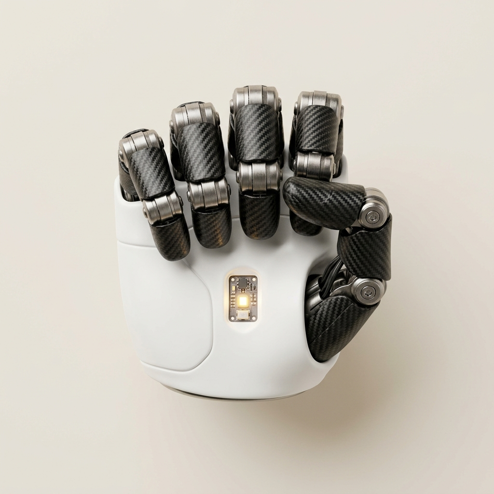

ESP32 DevKit V1
MAX30102 · GPIO21/22 · Servo GPIO13
Heart Rate
—
bpm
SpO₂
—
%
Temperature
—
°C
Servo Angle
0
°
Heart Rate
—
—
bpm
SpO₂
—
—
%
Temperature
—
—
°C
Robotic Hand
IDLE — fingers open

Servo Position
0°
0°Open → Close180°
Vitals History
HR
SpO₂
Temp
Session Log
0 events
Waiting for data…
Heart Rate (PPG)
—
—
BPM
Optical photoplethysmography via MAX30102 IR LED absorption during finger placement.
Blood Oxygen (SpO₂)
—
—
%
Calculated via Maxim Integrated dual-wavelength ratio of Red (660nm) vs Infrared (880nm) light.
Skin Temperature
—
—
°C
Internal die temperature sensor with calibrated skin thermal offset (+4.2°C).
3D Printed Hand Renders
Fingers Open (0°)
Servo Position Gauge
Signal → GPIO13
0°
Ramp Speed15 ms / 1° step delay (~2.7s sweep)
Fail-safe Limit30 seconds max hold time
Power WiringExternal 5V supply (Common GND)
Live Time-Series Trends
Telemetry Record Stream
0 readings recorded
| Timestamp | Heart Rate (BPM) | SpO₂ (%) | Temperature (°C) | Status |
|---|---|---|---|---|
| No telemetry readings recorded yet. | ||||
No system events recorded yet...